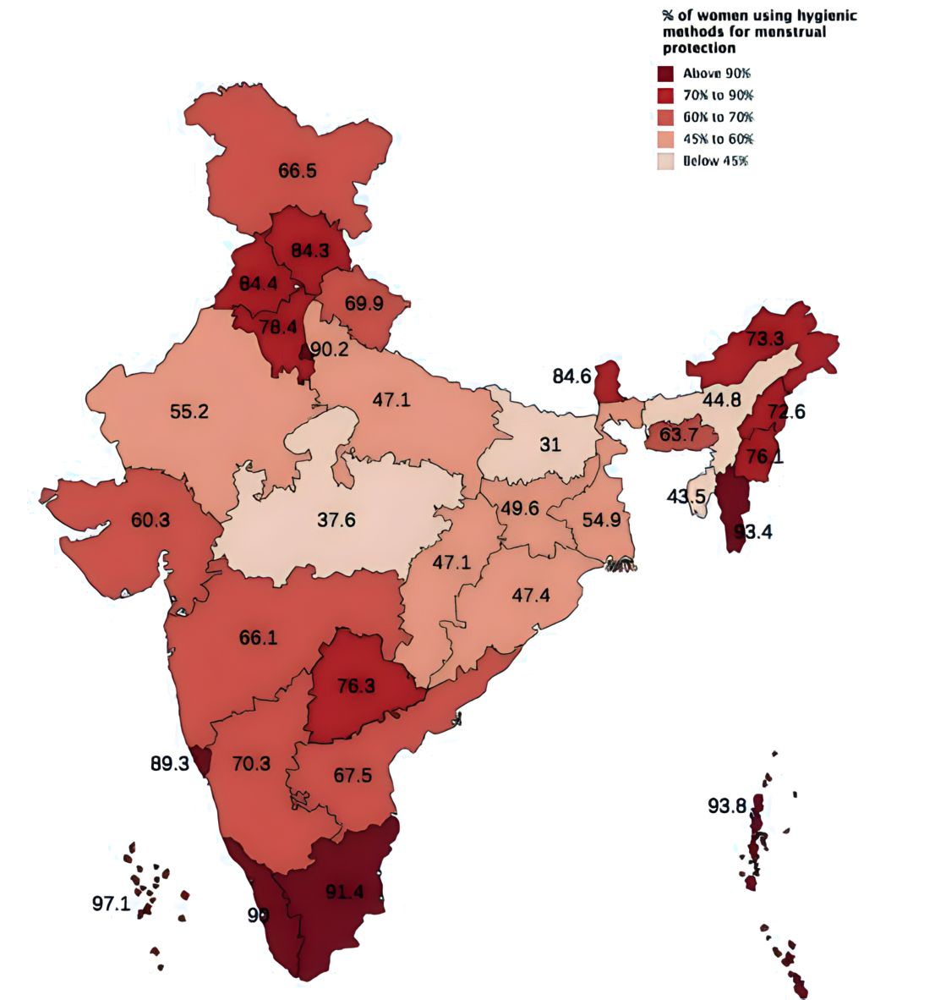

Map of India showing % of women using hygienic methods for menstrual protection
Here are some tips for maintaining menstrual health and hygiene:
Ans: The average menstrual cycle length ranges from 24 to 38 days, with 28 days being the most common.
Ans: You can track your menstrual cycle by noting the start and end dates of your periods and calculating the average cycle length over several months.
Ans: Yes, some natural remedies for menstrual cramps include applying heat, taking over-the-counter pain relievers, and practicing relaxation techniques.